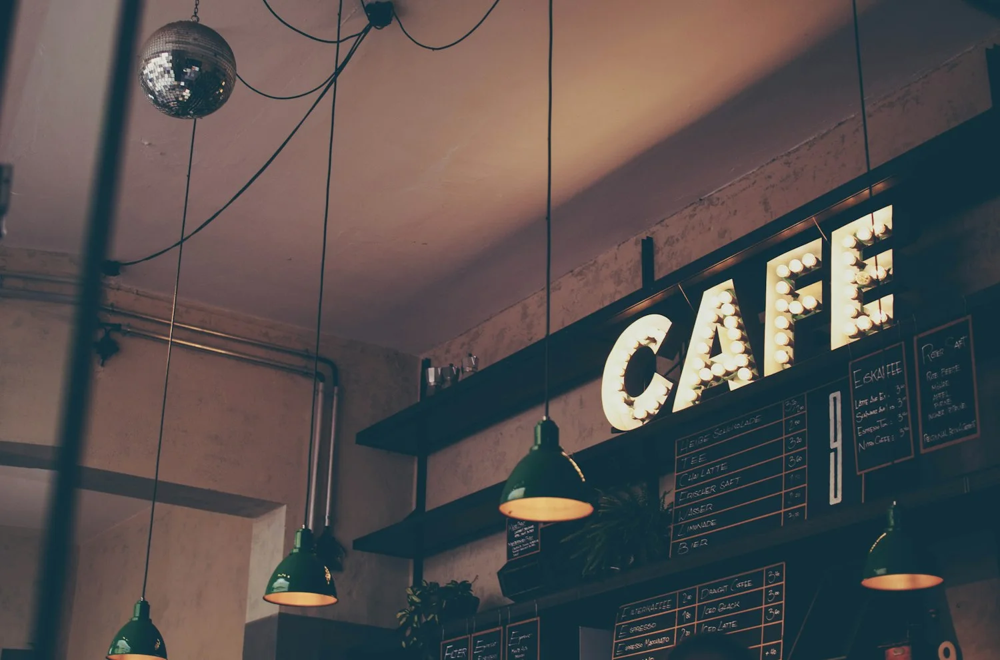

FOOD & COFFEE
お店のこと
中町 平ちゃんビルB1F
福島県・会津若松市 / ごはんとカフェ
会津若松市中町のcafe Re:sky。地域の店舗紹介では、アメリカンカジュアルのカフェとして案内されています。
ひと息の楽しみをのぞく
Re:sky
ごはんとカフェ
A LITTLE DISCOVERY
公開記事で紹介されている、
お店を知るための小さな手がかり。
FOOD & COFFEE
中町 平ちゃんビルB1F

FOOD & COFFEE
神明通りのカフェ
掲載内容は出典の掲載時点の情報です。写真はイメージで、現在の提供メニュー・商品を示すものではありません。
最新の案内を見るTAKE A LITTLE BREAK.
ふと気になる一軒を、
今日の寄り道の候補に。
COME SAY HELLO
Re:sky
店舗情報は公開資料の掲載時点のものです。現在の営業日・営業時間・提供内容は、訪問前にお店の案内でご確認ください。
福島県・会津若松市 / ごはんとカフェ